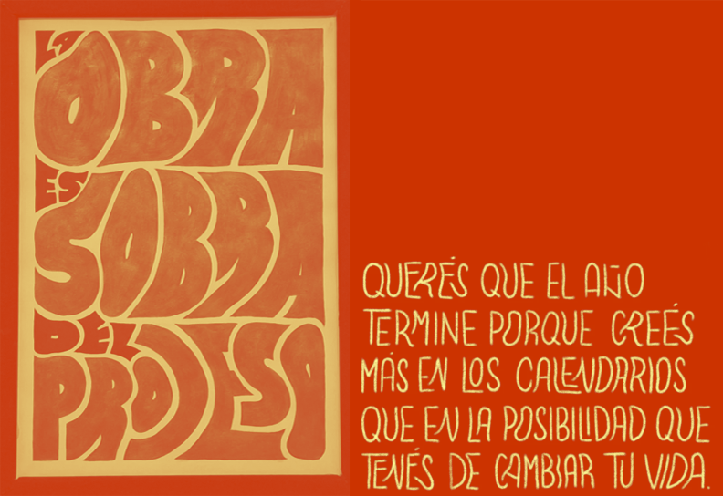
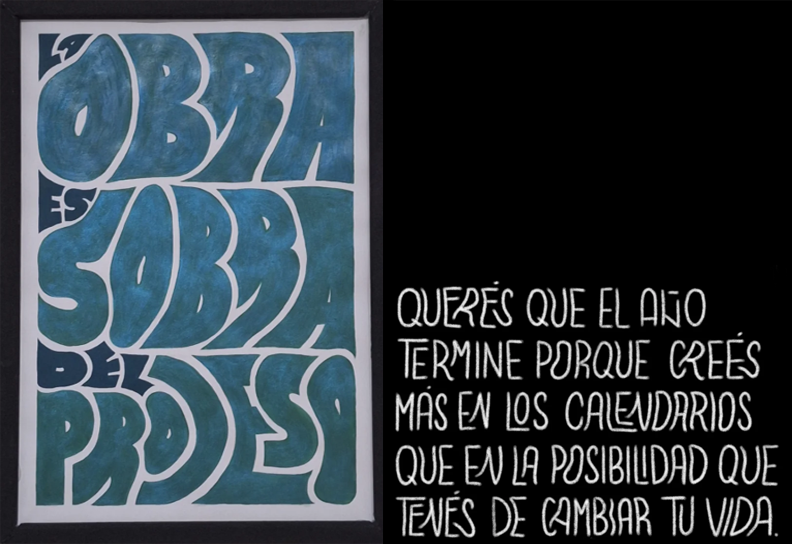

... pero también me dicen Brichi, y esa es mi marca personal.

... pero también me dicen Brichi, y esa es mi marca personal.
MADE IN ARGENTINA [PERO CON INGLÉS C1, OJO]
⭒ Resolutiva ⭒ Proactiva ⭒ Responsable ⭒ Comprometida ⭒ Creativa ⭒ Comunicativa ⭒ Descontracturada ⭒ Mi experiencia y formación me impulsan a encontrar soluciones a todo tipo de problemas, utilizando todas las herramientas técnicas y proyectuales aprendidas e incorporadas, al aprendizaje constante, actuar bajo presión y el intercambio con otros.


Un juego de cartas inspirado en el UNO, pensado para un contexto informal, con la idea de que tomar sea divertido. Consta de 50 cartas doble faz, ilustraciones propias que acompañan determinada acción a realizar con cada carta.


Proyecto de ilustración colectivo encabezado por Leo Moreira donde, en conjunto con 29 colegas, realizamos ilustraciones de cabezas en conjunto con otra palabra, que culminó en un calendario 2026 impreso en risografía a 2 tintas.


Identidad realizada para la librería Céspedes, sucursal de Belgrano; consta del diseño de vinilos exteriores, y cartel luminoso. Por otro lado, tenemos los separadores y los sobres que contienen los libros vendidos en sus tres sucursales.


Identidad para marca de ropa inspirada en el animé y la cultura japonesa contemporánea. Se compone de varias prendas de diversos tipos, accesorios, la realización de logo, y de una tipografía única identitaria en sistema con el mismo.


Afiche expuesto en el MUD (Museo Universitario de Diseño), en el marco de la exposición URGE!, para la emergencia ambiental. Realizado el año 2025, tras una invitación extendida por la cátedra de Taller de Diseño II (Reboursin).


Identidad visual para el Museo de la Interferencia, un lugar donde la falla es bienvenida y la interferencia visual es la estrella. Consta de señalética, logos, afiches, indumentaria, piezas editoriales, merch, postales y redes.


Proyecto editorial: revista de 28 páginas sobre los tantos efectos del plástico. Incluye elementos infográficos, textos destacados, anexos, listados, tablas, catálogos, sumario, y bloques de texto pensados para la lectura de corrido.


Libro de artista que manifiesta, en diversas técnicas y composiciones las injusticias en relación a la explotación animal, a nivel global. Juega con lo oculto, con aquello que no se quiere ver. Consta de libro, contenedor, y más.


Identidad visual para festival de cine argentino, que celebra la lentitud como parte del ritmo. Incluye afiches, pieza editorial, postales, cronograma impreso y digital, tickets, y merch.


Piezas de lettering realizadas para proyectos personales en forma de afiches y/o publicaciones para redes; juego con la adaptabilidad y la flexibilidad, con libertades compositivas.
El poder de la imaginación nos hace infinitos.
Contactame via correo, a través de mis redes sociales, o dejame tu contacto y tu consulta por acá: